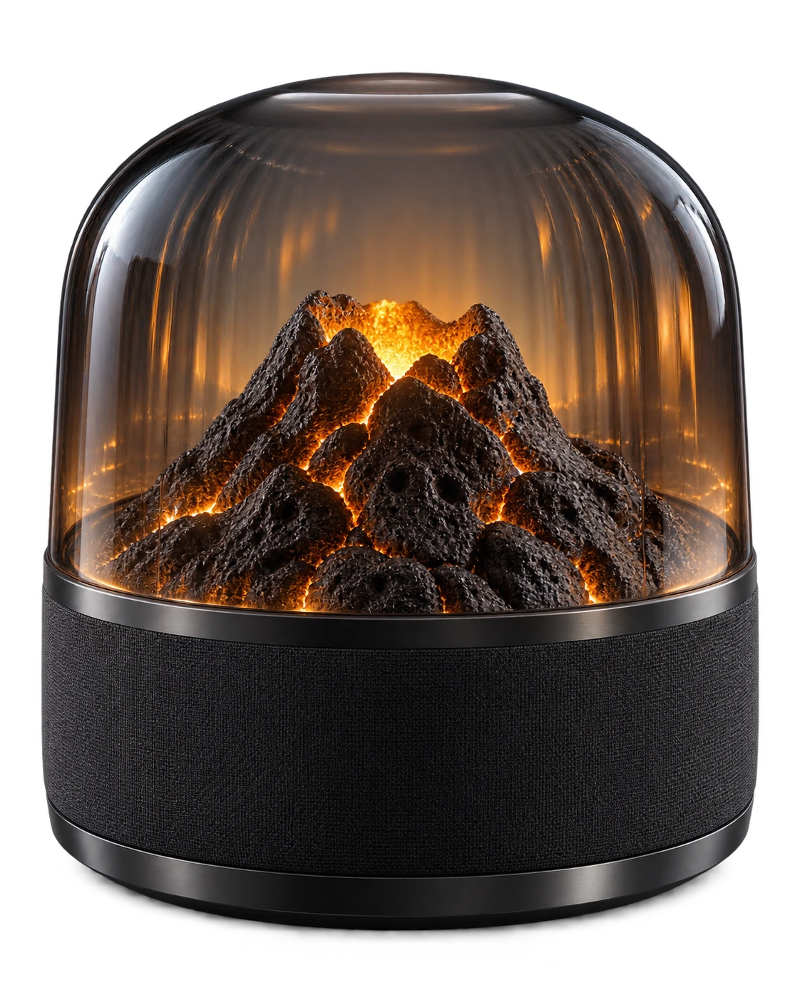
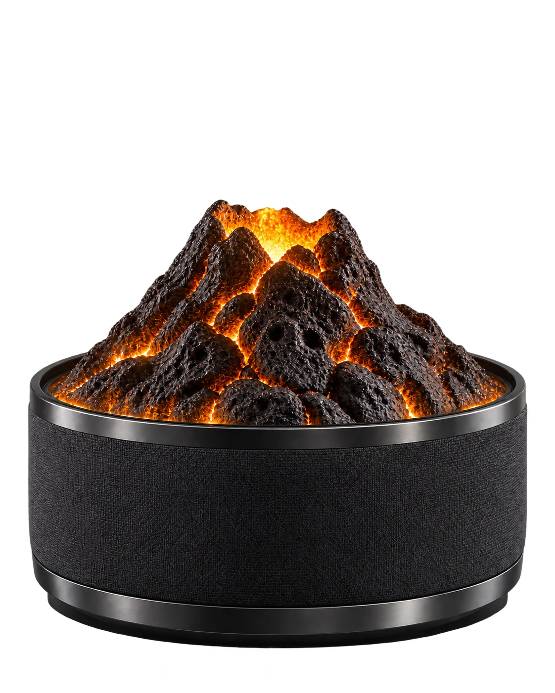
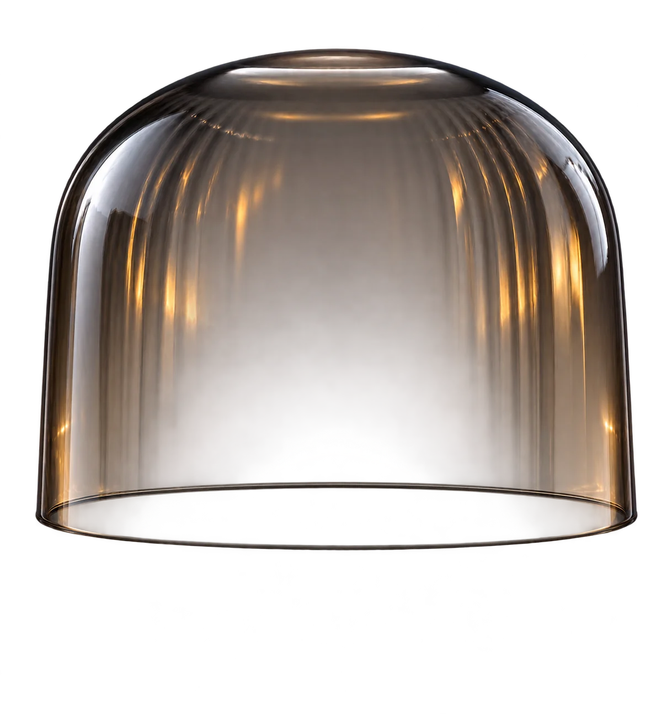
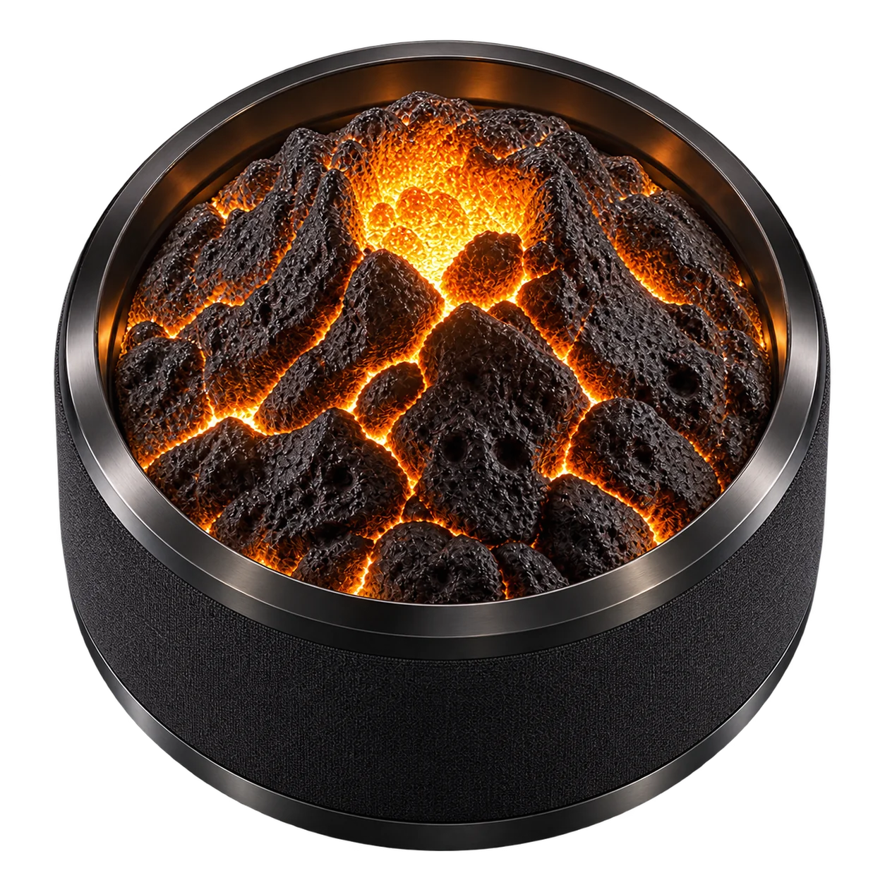

Человек, который выбирает интерьер
Ориентировочно 28–50 лет; обустраивает собственное пространство и готов платить за материалы, акустику и долговечность.
Нужно: устройство, которое гармонично стоит на виду и не превращает комнату в панель приборов.
УМНАЯ НАСТОЛЬНАЯ КОЛОНКА · LUXE
Скульптурный вулкан и тёплый свет внутри стекла. Листайте, чтобы увидеть устройство снаружи и изнутри.
Открыть колонкуУчебный концепт • Предлагаемая форма и проектные цели




01 / ИДЕЯ ПРОДУКТА
Стеклянный купол оставляет сердечник на виду. Под ним — акустическая ткань и точное металлическое кольцо. Объект выглядит по-разному днём и вечером, сохраняя спокойный силуэт.
02 / ВНУТРИ ФОРМЫ
Скульптурный вулкан скрывает световой модуль. Прозрачная оболочка защищает композицию и рассеивает отражения. В графитовом основании расположены динамики, управление, микрофоны и электроника.
Разнесённая модель показывает компоновочную идею. Это не готовая конструкторская документация.
03 / СВЕТ КАК ЯЗЫК
Свет выходит из трещин рельефа и отражается в стекле. Он мягко меняет интенсивность при действии и снова успокаивается. Состояния дополняются движением и звуковым подтверждением: смысл не зависит только от цвета.
В ночном режиме яркость снижается. Эффект остаётся атмосферным, а не навязчивым.
МАТЕРИАЛЫ / СВЕТ / ЗВУК
Стекло не прячет характер колонки. Оно создаёт пространство вокруг внутреннего рельефа и собирает тёплые отблески в одну цельную форму.
Прозрачный купол с мягким дымчатым оттенком. Контролируемые блики подчёркивают объём.
Съёмная скульптурная вставка напоминает застывшую лаву; рельеф не мешает акустическому тракту.
Акустическая ткань окружает нижний модуль. Внутри него остаются динамики и электроника.
ЧАСТЬ I / ПРОДУКТОВЫЙ БРИФ
AURA решает три повседневные задачи: включает звук без телефона, принимает короткие голосовые команды и понятно показывает, что сейчас происходит.
Предполагаемый контекст — гостиная, рабочий стол или прикроватная тумба. Стационарное питание позволяет не подчинять акустику и размеры автономности. Использование в ванной и на улице в этот концепт не входит.
ЦЕЛЕВАЯ АУДИТОРИЯ
Ориентировочно 28–50 лет; обустраивает собственное пространство и готов платить за материалы, акустику и долговечность.
Нужно: устройство, которое гармонично стоит на виду и не превращает комнату в панель приборов.
Работает из дома, готовит, переключается между делами. Часто руки заняты, а телефон лежит в другой комнате.
Нужно: быстро включить музыку, поставить таймер и изменить громкость одним действием.
Колонкой пользуются несколько человек с разным опытом и привычками. Важны понятное управление и контроль микрофонов.
Нужно: различать состояния, управлять без обучения и физически отключать прослушивание.
Сегменты и возраст — гипотеза для исследования, а не результат проведённого опроса. Покупатель и ежедневный пользователь могут быть разными людьми.
ДОМАШНИЙ СЦЕНАРИЙ / ИССЛЕДОВАНИЕ
Провести 8–12 интервью и наблюдения в домашних условиях: где стоит колонка, на каком расстоянии подают команды, что мешает распознаванию и какой свет раздражает вечером. Затем дать участникам макет и задачи без инструкции: поставить паузу, изменить громкость, выключить микрофон.
Зафиксировать: успешность первого действия, ошибки, время поиска управления, понятность состояний и субъективный комфорт. Проверить разные высоты мебели, освещение, фоновые звуки и ограничения моторики. Число участников — предложенный план качественного исследования.
ИНТЕРАКТИВНЫЙ ДИЗАЙН-РАЗБОР
Перетаскивайте модель или используйте ползунок. Нажмите на номер детали, чтобы узнать, почему она устроена именно так.
СВЕТ И ТАКТИЛЬНОСТЬ / ЛАБОРАТОРИЯ
Выберите состояние — внутренний свет на модели изменит цвет и ритм. Это демонстрация интерфейса, без доступа к микрофону.
Поворот верхнего кольца меняет громкость. Короткое нажатие — пауза. Механический переключатель отключает питание микрофонов.
Демо воспроизводит короткий синтезированный аккорд по нажатию. Голосовое распознавание и стриминг на сайте не подключены.
ФУНКЦИИ / ТЕХНИЧЕСКИЕ ПАРАМЕТРЫ
Значения ниже — целевые ориентиры концепта. Для их подтверждения необходимы акустические, тепловые и пользовательские испытания.
| Блок | Проектная цель | Зачем / как проверить |
|---|
Локальное обнаружение слова активации, затем обработка команды выбранным голосовым сервисом. Базовые команды: воспроизведение, пауза, громкость и таймер.
До выбора платформы необходимо определить доступность сервисов, хранение данных и работу без сети. Офлайн-команды — отдельное требование к ПО.
Музыка, подкасты и речь по Wi-Fi или Bluetooth. Цифровая обработка помогает согласовать динамики и ограничить перегрузку.
Цилиндрическая форма сама по себе не гарантирует звук на 360°. Направленность проверяется измерениями вокруг устройства.
Ожидание, прослушивание, обработка, ошибка связи и отключённый микрофон. Разные состояния отличаются цветом, ритмом и характером подтверждения.
Ночью яркость снижается вручную или по датчику освещённости. Минимальная индикация приватности должна оставаться различимой.
СТАНДАРТЫ / ПЛАН ПРОВЕРКИ
Предварительная карта для вывода в ЕАЭС. Применимость и актуальные перечни стандартов уточняются после выбора питания, радиомодулей и комплектации. Соответствие пока не подтверждено.
Электромагнитная совместимость технических средств. Проверить помехи от усилителя и блока питания, а также устойчивость к внешним воздействиям.
Источник: ЕЭКОграничение применения опасных веществ в изделиях электротехники и радиоэлектроники. Запросить документы на компоненты, материалы и покрытия.
Источник: ЕЭКОтдельно определить требования к сетевому адаптеру и низковольтному устройству. Оценить безопасность нагрева, изоляции и доступных частей, а также требования к выбранным Wi-Fi / Bluetooth модулям.
Точный перечень нормативных документов формируется на этапе технического задания.
Продумать информирование об обработке голоса, удаление истории и физическое отключение микрофонов. Проверить доступность управления, понятность инструкции и устойчивость изделия.
Оформить матрицу: требование → проектное решение → метод испытания → результат.
ЧАСТЬ II / СТЕЙКХОЛДЕРЫ
Круговая карта показывает группы заинтересованных сторон. Размеры секторов условные и не отражают доли рынка, бюджет или результаты опроса.
ОТ КОНЦЕПТА К ПРОТОТИПУ
Проверить габариты на реальной мебели, устойчивость, доступ к кольцу и видимость света сидя и стоя. Сравнить минимум два диаметра и две высоты.
Измерить акустику и нагрев, подобрать ткань, проверить микрофоны во время музыки. Оценить усилие поворота, люфт и ресурс переключателя.
Проверить распознавание команд, ночной свет и первые действия без инструкции. Скорректировать дизайн по наблюдаемым ошибкам, затем готовить конструкцию и испытания.